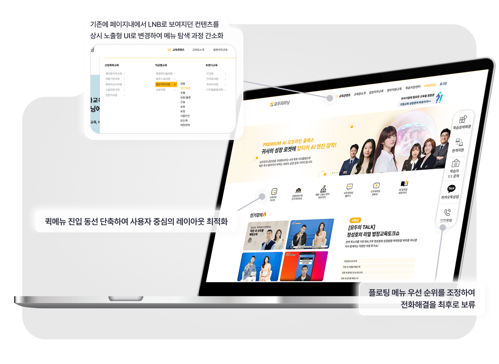
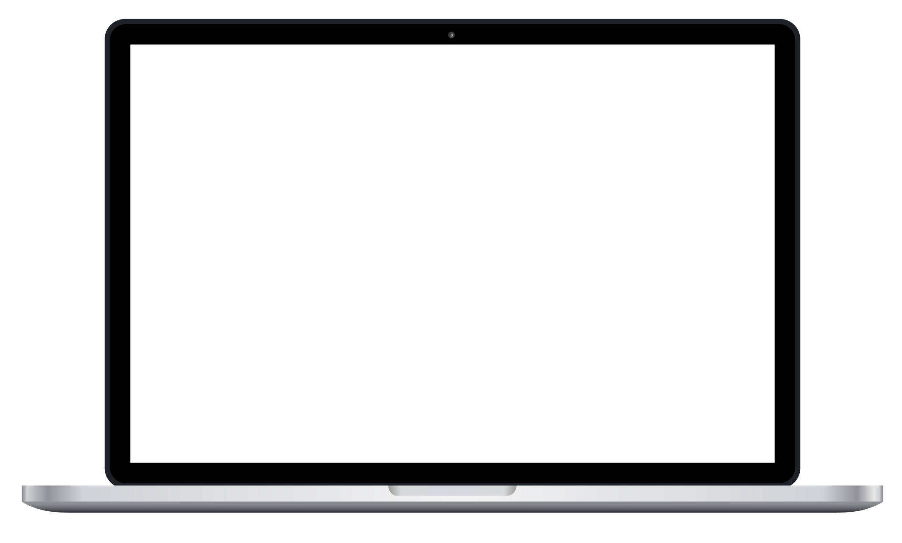
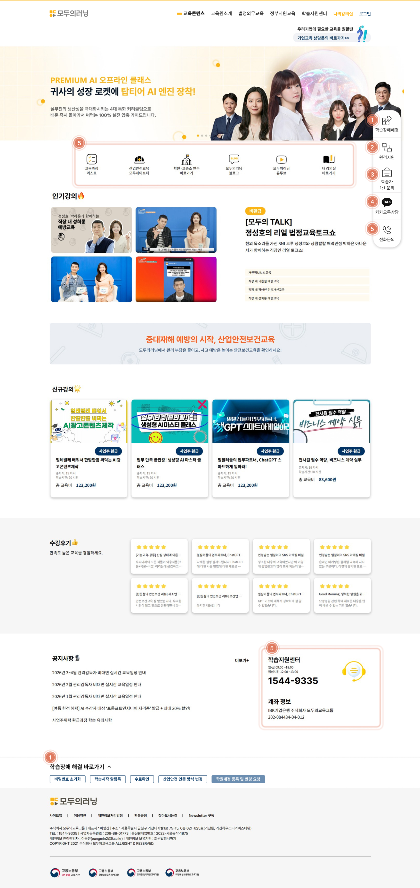
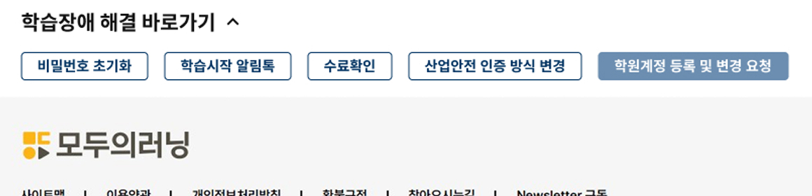
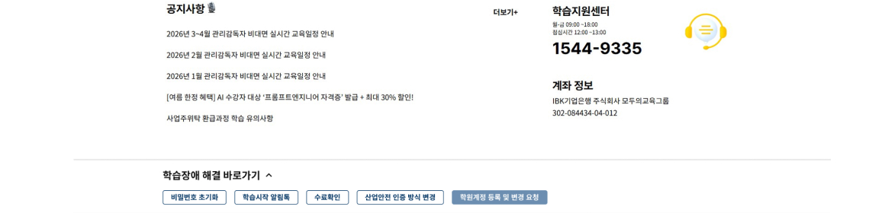
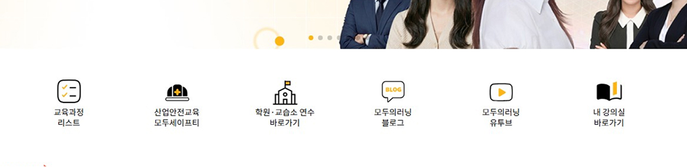
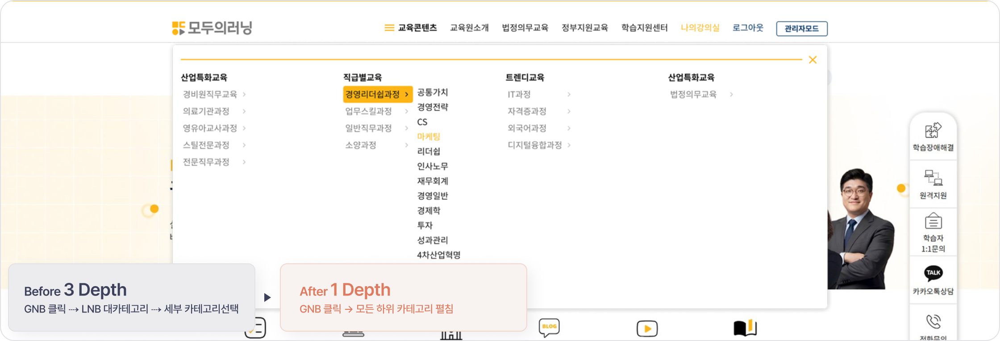
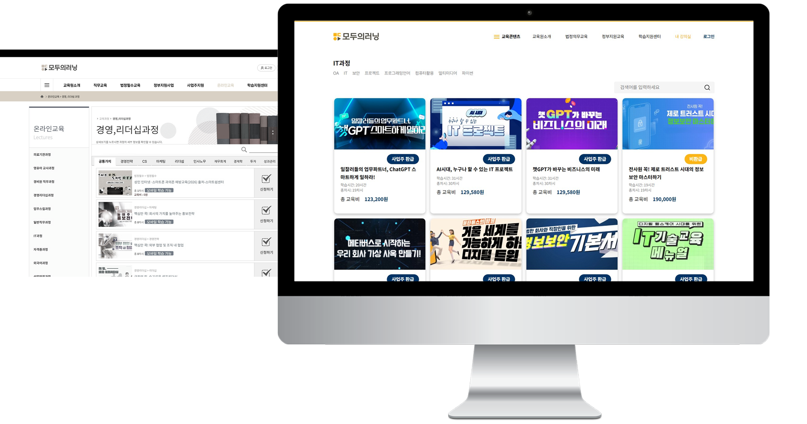
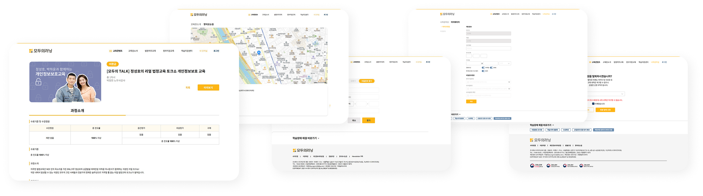

60% → 18% 위치 문의 CS 감소
정보 위치를 묻는 단순 안내 문의가 CS 전화량을 60%가량 낮춘 것으로 추정.
노출형 정보 구조 설계와 문제해결 방법 우선순위 재배치를 통한 CS 억제



사용자가 즉각적으로 인지할 수 있도록 정보 구조를 정리하고,
퀵 메뉴 및 플로팅 우선순위를 재배치하여 CS 인입 최소화.
배경
40-60대 사용자가 주를 이루는 환경에서, 숨겨진 메뉴 구조인 LNB가 인지 부하를 만들어 CS 문의 폭주로 이어짐.
문제점
원하는 강의나 메뉴를 찾지 못해 발생하는 '단순 위치 문의' 전화가 CS 업무의 대부분을 차지하여 운영 효율 저하.
목표
정보 구조를 정리하고, 퀵 메뉴 및 플로팅 우선순위를 재배치하여 CS 인입 최소화.
전화문의 전 사용자가 스스로 해결 할 수 있도록 우선순위를 설계하여, 단순 문의성 유선 상담을 차단.


자가 해결 버튼섹션으로 유도 ⇢ 원격 능동 지원 ⇢ 비대면 상담 ⇢ 유선 지원 순서의 위계 시각화.

클릭 시 푸터에 있는 아코디언 문제해결 버튼 섹션으로 스크롤 이동하여 자주 묻는 문제를 직접 해결하도록 유도.

버튼 클릭시 번호안내블럭으로 스크롤 이동, 푸터의 문제 해결 버튼 섹션도 함께 열려 해결버튼을 인지시킴.

가장 문의가 많은 강의 리스트와 나의강의실을 '첫번째' 혹은 '마지막'같은 안내로 빠르게 해결할수 있도록 양 끝에 배치.
기존의 3댑스 강의 카테고리를 버리고 노출형 리스트 UI 로 카테고리 재배치.
모든 하위 카테고리가 한눈에 펼쳐지는 메가메뉴를 도입하여 즉각적인 인지 유도.

적응형으로 되어있는 사이트를 추후 반응형 작업을 하기위해 카드형 UI로 변경.


정보 위치를 묻는 단순 안내 문의가 CS 전화량을 60%가량 낮춘 것으로 추정.
숨겨진 SNB 구조를 GNB 노출형으로 재배치하여 정보 탐색 깊이를 3 Depth → 1 Depth 로 단축. 메뉴 도달 클릭 수를 1/3 로 축소.
정보 노출 전략의 효과로 40-60대 사용자 대상 강의 탐색/내 강의실 진입/자료 다운로드 완료율이 약 30%이상 상승한 것으로 추정.